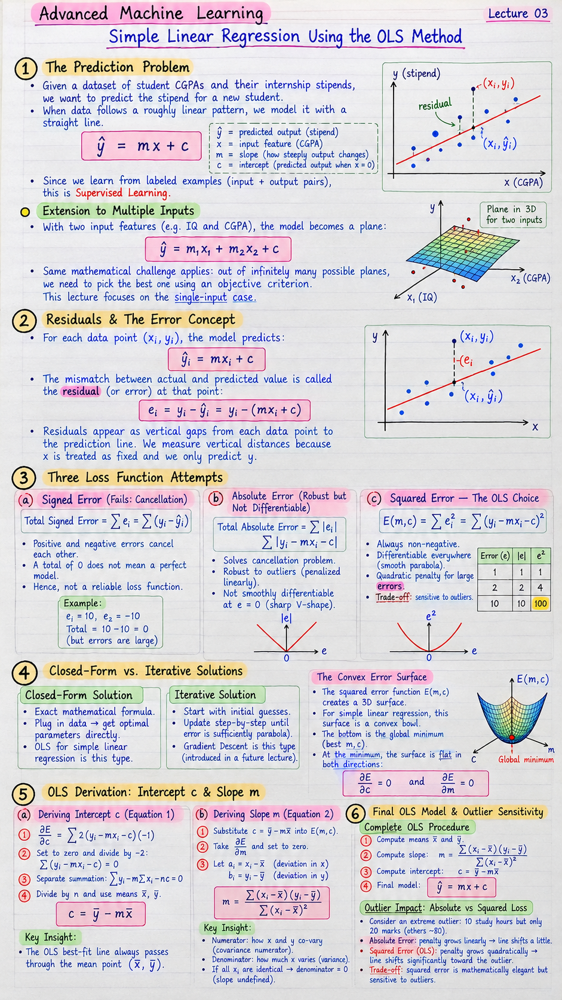

Short Notes & Visual Summary
Handwritten / quick summary notes for Lecture 03:

Click image to open high-resolution version in new tab
The Prediction Problem
1.1 The Linear Model & Supervised Learning
Given a dataset of student CGPAs and their internship stipends, we want to predict the stipend for a new student. When data follows a roughly linear pattern, we model it with a straight line:
- ŷ (y-hat) = predicted output (stipend)
- x = input feature (CGPA)
- m = slope — how steeply the output changes with input
- c = intercept — predicted output when x = 0
Because we learn from labeled examples (input + correct output pairs), this is supervised learning.
1.2 Extension to Multiple Inputs
With two input features (e.g. IQ and CGPA), the model becomes a plane in 3D space:
The same mathematical challenge applies: out of infinitely many possible planes, we need to pick the best one using an objective criterion. This lecture focuses on the single-input case to keep the mathematics clear.
Residuals & The Error Concept
2.1 Predicted Value & Residual
For each data point (xᵢ, yᵢ), the model predicts:
The mismatch between the actual value and the predicted value is called the residual (or error) at that point:
On a graph, residuals appear as vertical gaps from each data point to the prediction line. We measure vertical distances because x is treated as fixed and we only predict y.
2.2 Choosing m and c to Minimize Errors
Since the line rarely passes through every data point, we need to choose values of m and c that collectively minimize residuals across all data points. To do this, we need to combine all individual errors into a single number — a loss function.
Three Loss Function Attempts
3.1 Signed Error (Fails: Cancellation)
The first idea: sum all errors directly:
⚠️ Fatal flaw: Positive and negative errors cancel each other. A total of 0 does not mean a perfect model — it could mean large errors in both directions that perfectly cancel. This is not a reliable loss function.
3.2 Absolute Error (Robust but Not Differentiable)
Remove signs by taking absolute values:
This solves the cancellation problem. It is also robust to outliers because errors are penalized linearly (doubling the error doubles the penalty).
However, |e| has a sharp V-shape at e = 0 where the derivative is undefined, making it not smoothly differentiable — which blocks clean OLS derivation using calculus.
3.3 Squared Error — The OLS Choice ✓
Square each error, then sum:
This is the Ordinary Least Squares (OLS) loss function. It has three key properties:
- Always non-negative: Squaring eliminates sign and cancellation.
- Differentiable everywhere: x² is a smooth parabola — clean calculus is possible.
- Quadratic penalty for large errors: An error of 10 receives a penalty of 100 (vs error of 1 → penalty of 1). This allows large deviations to dominate the optimization.
⚠️ Trade-off: This quadratic sensitivity means outliers strongly influence the OLS line.
| Error (e) | |e| (Absolute) | e² (Squared) |
|---|---|---|
| 1 | 1 | 1 |
| 2 | 2 | 4 |
| 10 | 10 | 100 |
Closed-Form vs. Iterative Solutions
4.1 Closed-Form OLS
There are two ways to solve optimization problems in ML:
- Closed-Form Solution: An exact mathematical formula. Plug in data → get optimal parameters directly. OLS for Simple Linear Regression is this type.
- Iterative Solution: Start with initial guesses, update step-by-step until error is sufficiently small. Gradient Descent is this type (introduced in a future lecture).
4.2 The Convex Error Surface
The squared error function E(m, c) creates a 3D surface:
- x-axis: slope m
- y-axis: intercept c
- z-axis: total squared error E(m, c)
For Simple Linear Regression, this surface is a convex bowl. The bottom of the bowl is the global minimum — guaranteed to be the best (m, c) pair. At the minimum, the surface is flat in both directions:
OLS Derivation: Intercept c & Slope m
5.1 Deriving Intercept c (Equation 1)
Take the partial derivative of E(m, c) with respect to c, set to zero, and simplify. Key steps:
- Apply chain rule: ∂E/∂c = Σ 2·(yᵢ − m·xᵢ − c)·(−1)
- Set equal to zero and divide by −2: Σ (yᵢ − m·xᵢ − c) = 0
- Separate summation: Σ yᵢ − m·Σ xᵢ − n·c = 0
- Note: Σ c = n·c (adding a constant c to itself n times)
- Divide by n and recognise sample means x̄ and ȳ
Final result — Equation 1:
✨ Key Insight: The OLS best-fit line always passes through the mean point (x̄, ȳ) — the center of the data cloud.
5.2 Deriving Slope m (Equation 2)
Substitute c = ȳ − m·x̄ back into E(m, c), then take ∂E/∂m and set to zero. Define:
- aᵢ = xᵢ − x̄ (deviation of each x from mean)
- bᵢ = yᵢ − ȳ (deviation of each y from mean)
Differentiating and setting to zero gives — Equation 2:
✨ Key Insight: The numerator measures how x and y co-vary (covariance numerator). The denominator measures how much x varies alone (variance of x). If all xᵢ are identical, the denominator is zero → slope undefined (no meaningful regression possible).
Final OLS Model & Outlier Sensitivity
6.1 The Complete OLS Procedure
To fit the OLS best-fit line:
- Compute means x̄ and ȳ from the dataset.
- Compute slope using Equation 2:
m = Σ (xᵢ − x̄)(yᵢ − ȳ) / Σ (xᵢ − x̄)²
- Compute intercept using Equation 1:
c = ȳ − m·x̄
- Write the final model:
ŷ = m·x + c
6.2 Outlier Impact: Absolute vs Squared Loss
Consider an extreme outlier student: 10 study hours but only 20 marks (everyone else scored ~80 at that level).
- Under Absolute Error: penalty grows linearly with the error. Outliers are penalized, but not excessively. The best-fit line shifts a little toward them.
- Under Squared Error (OLS): penalty grows quadratically. A large outlier receives a massive penalty and the OLS line shifts significantly toward it to reduce that squared term.
This is the fundamental trade-off: squared error is mathematically elegant (differentiable, clean formulas) but sensitive to outliers.
Original PDF Notes
Below is the original worksheet PDF for reference: